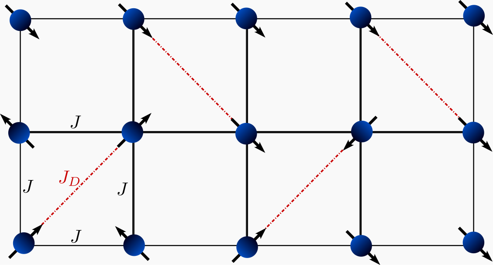
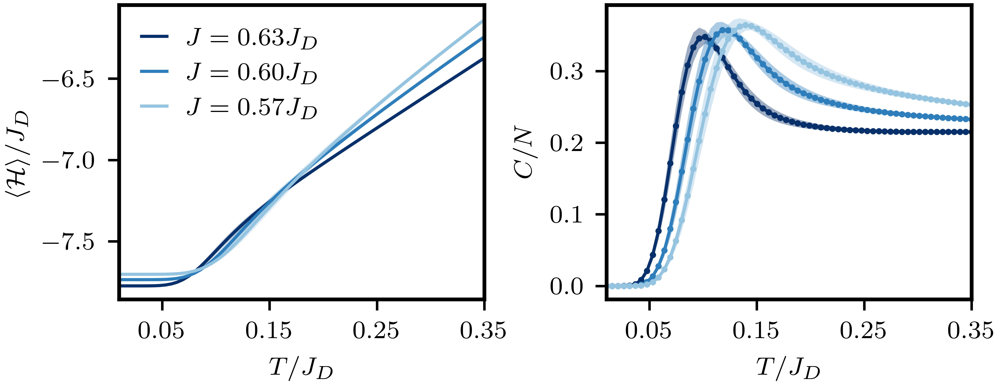

Shastry Sutherland Specific Heat with TPQ
We use an ensemble of Thermal Pure Quantum (TPQ) states [1] to compute the total energy and specific heat as functions of temperature for the Shastry–Sutherland model.
The Shastry–Sutherland model is a paradigmatic example of a frustrated two-dimensional antiferromagnetic spin system. It is widely used as a faithful representation of materials such as the frustrated quantum magnet \(\text{SrCu}_2(\text{BO}_3)_2\). On a square lattice, the model describes spin \(-\frac{1}{2}\) magnetic moments interacting via Heisenberg antiferromagnetic couplings, as shown in following figure.

The Hamiltonian is given by
The expectation value of an observable \(\mathcal{O}\) in the canonical ensemble is
where \(\beta\) is the inverse temperature and \(\mathcal{Z} = \text{Tr}\left(e^{-\beta \mathcal{H}}\right)\). We approximate the trace stochastically using a set of random vectors \(\{r_\alpha\}\), leading to
$$ \langle \mathcal{O} \rangle \approx \sum_{\alpha} \frac{\langle \beta_\alpha | \mathcal{O} | \beta_\alpha \rangle}{\langle \beta_\alpha | \beta_\alpha \rangle}, \quad \text{with } |\beta_\alpha\rangle = e^{-\beta \mathcal{H}}|r_\alpha\rangle, $$ where $ |\beta_\alpha\rangle$ is a TPQ state.
We efficiently compute the TPQ state using the Lanczos basis [2], \(V\), constructed from \(|r_\alpha\rangle\). In this basis, the observable is approximated as
where \(e_1^T = (1, 0, \dots, 0)\) and \(T = V^\dagger \mathcal{H} V\) is a tridiagonal matrix.
Thus, for each random state, the algorithm performs the following steps:
-
Generate the Lanczos Basis: Obtain the elements of the tridiagonal matrix \(T\) from the state \(|r_\alpha\rangle\).
-
Compute Observables: To obtain the specific heat, $$ C = \beta^2\left[\langle \mathcal{H}^2 \rangle - \langle \mathcal{H} \rangle^2\right], $$ we need to evaluate
This part could be done in the post-processing. The result is shown in the following figure,  The error bar was done using a Jackknife analysis.
#include <xdiag/all.hpp>
const int Nsites = 20; // Total number of sites in the Shastry-Sutherland model:
const int Rtqp = 5; // Number of random vectors to be used in the algorithm
using namespace xdiag;
auto fl = FileToml("shastry_sutherland_L_5_W_4.toml"); // TOML file with the
// list of interactions
void Tqp_mag_sector(arma::mat &Obser, arma::vec &DBetas, OpSum &H);
int main() try {
// Read OpSum from file
OpSum ops = read_opsum(fl, "Interactions");
// Defines exchange coupling strenght -- This ratio of couplings corresponds
// to the dimmer phase.
ops["Jd"] = 1.0;
ops["J"] = 0.630;
// Linear Array with target temperatures
arma::vec Temp = arma::linspace<arma::vec>(0.01, 0.35, 64);
// Array to store the specific heat
arma::mat Obser = arma::mat(Temp.n_elem, 3, arma::fill::zeros);
Tqp_mag_sector(Obser, Temp, ops);
auto save_fl = FileH5("shastry_sutherland_L_5_W_4.h5", "w!");
save_fl["Temp"] = Temp;
save_fl["Observable"] = Obser;
return 0;
} catch (Error e) {
error_trace(e);
}
void Tqp_mag_sector(arma::mat &Obser, arma::vec &Temp, OpSum &H) {
auto block =
Spinhalf(Nsites); // Create spin-1/2 block with conservation of Sz
arma::vec eigs;
arma::mat vecs;
for (int k = 0; k < Rtqp;
k++) // #Perform the calculation for each random vector
{
auto res = eigvals_lanczos(
H, block, 1, 1e-12, 150, 1e-7,
k); // Perform the Lanczos interation starting from a random vector;
// This part can be done in the post-processing
arma::mat tmatrix = arma::diagmat(res.alphas);
tmatrix += arma::diagmat(res.betas.head(res.betas.size() - 1), 1) +
arma::diagmat(res.betas.head(res.betas.size() - 1), -1);
arma::eig_sym(eigs, vecs, tmatrix); // get eigenvector of T
for (int k = 0; k < Temp.n_elem; k++) {
arma::vec psi1 = (arma::exp(-(eigs - eigs(0)) / (2.0 * Temp(k))) %
arma::conj((vecs.row(0).t()))); // compute psi_1
Obser(k, 0) +=
arma::dot(psi1, psi1); // get norm factor for the partition function
Obser(k, 1) += arma::dot(psi1, eigs % psi1); // measure energy
Obser(k, 2) +=
arma::dot(psi1, eigs % eigs % psi1); // measure energy square
}
}
}
using LinearAlgebra, LinearAlgebra.LAPACK
using XDiag
using HDF5
using Printf
const Nsites = 20 # Total number of sites in the Shastry-Sutherland model:
const Rtqp = 2 # Number of random vectors to be used in the algorithm
function Tqp_mag_sector(Obser::Matrix{Float64}, Temp::LinRange{Float64,Int64}, H::OpSum)
block = Spinhalf(Nsites) #Create spin-1/2 block with conservation of Sz
for k in 1:Rtqp #Perform the calculation for each random vector
res = eigvals_lanczos(H, block, neigvals=1, precision=1e-12, max_iterations=150, deflation_tol=1e-7, random_seed=k) # Perform the Lanczos interation starting from a random vector;
d = length(res.alphas)
vecs = Matrix{Float64}(I, d, d)
#This part can be done in the post-processing
(eigs, vecs) = LAPACK.stev!('V', res.alphas, res.betas)
for k in 1:length(Temp)
psi1 = exp.(-(eigs .- eigs[1]) ./ (2.0 .* Temp[k])) .* conj(vecs[1, :]) # compute psi_1
Obser[k, 1] += dot(psi1, psi1)# get norm factor for the partition function
Obser[k, 2] += dot(psi1, eigs .* psi1) # measure energy
Obser[k, 3] += dot(psi1, eigs .* (eigs .* psi1))# measure energy square
end
end
end
function main()
#Reads the file with the interactions
fl = FileToml("shastry_sutherland_L_5_W_4.toml")
ops = read_opsum(fl, "Interactions")
#Defines exchange coupling strenght -- This ratio of couplings corresponds to the dimmer phase.
ops["Jd"] = 1.0
ops["J"] = 0.630
# Linear Array with target temperatures
Temp = LinRange(0.01, 0.35, 64)
# Array to store the average value of the observable
Obser = zeros(Float64, (length(Temp), 3))
Tqp_mag_sector(Obser, Temp, ops)
filename = @sprintf("shastry_sutherland_L_5_W_4.h5")
h5open(filename, "w") do file
write(file, "Temp", collect(Temp))
write(file, "Observable", Obser)
end
end
main()
The interactions terms for the Shastry Sutherland model with \(L=5\) and \(W=4\) sites is given in the following TOML file:
# Interaction Shastry Sutherland with L=5 and W=4
Interactions = [["J", "SdotS", 0, 4],
["J", "SdotS", 0, 16],
["J", "SdotS", 0, 1],
["J", "SdotS", 0, 3],
["J", "SdotS", 1, 5],
["J", "SdotS", 1, 17],
["J", "SdotS", 1, 2],
["J", "SdotS", 2, 6],
["J", "SdotS", 2, 18],
["J", "SdotS", 2, 3],
["J", "SdotS", 3, 7],
["J", "SdotS", 3, 19],
["J", "SdotS", 4, 8],
["J", "SdotS", 4, 5],
["J", "SdotS", 4, 7],
["J", "SdotS", 5, 9],
["J", "SdotS", 5, 6],
["J", "SdotS", 6, 10],
["J", "SdotS", 6, 7],
["J", "SdotS", 7, 11],
["J", "SdotS", 8, 12],
["J", "SdotS", 8, 9],
["J", "SdotS", 8, 11],
["J", "SdotS", 9, 13],
["J", "SdotS", 9, 10],
["J", "SdotS", 10, 14],
["J", "SdotS", 10, 11],
["J", "SdotS", 11, 15],
["J", "SdotS", 12, 16],
["J", "SdotS", 12, 13],
["J", "SdotS", 12, 15],
["J", "SdotS", 13, 17],
["J", "SdotS", 13, 14],
["J", "SdotS", 14, 18],
["J", "SdotS", 14, 15],
["J", "SdotS", 15, 19],
["J", "SdotS", 16, 17],
["J", "SdotS", 16, 19],
["J", "SdotS", 17, 18],
["J", "SdotS", 18, 19],
["Jd", "SdotS", 0, 5],
["Jd", "SdotS", 6, 9],
["Jd", "SdotS", 2, 7],
["Jd", "SdotS", 4, 11],
["Jd", "SdotS", 8, 13],
["Jd", "SdotS", 14, 17],
["Jd", "SdotS", 10, 15],
["Jd", "SdotS", 12, 19],
["Jd", "SdotS", 1, 16],
["Jd", "SdotS", 3, 18]]
N = [20]
references
[1] S. Sugiura and A. Shimizu, Thermal Pure Quantum States at Finite Temperature, Phys. Rev. Lett. 108, 240401 (2012).
[2] Wietek, Alexander, Corboz, Philippe, Wessel, Stefan, Normand, B., Mila, Fr\'ed\'eric and Honecker, Andreas Thermodynamic properties of the Shastry-Sutherland model throughout the dimer-product phase, PhysRevResearch.103, 3038 (2019).